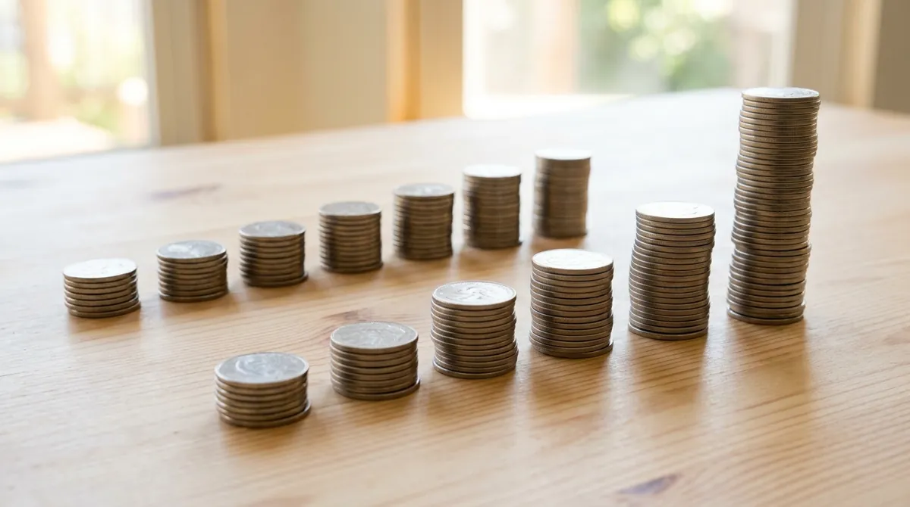
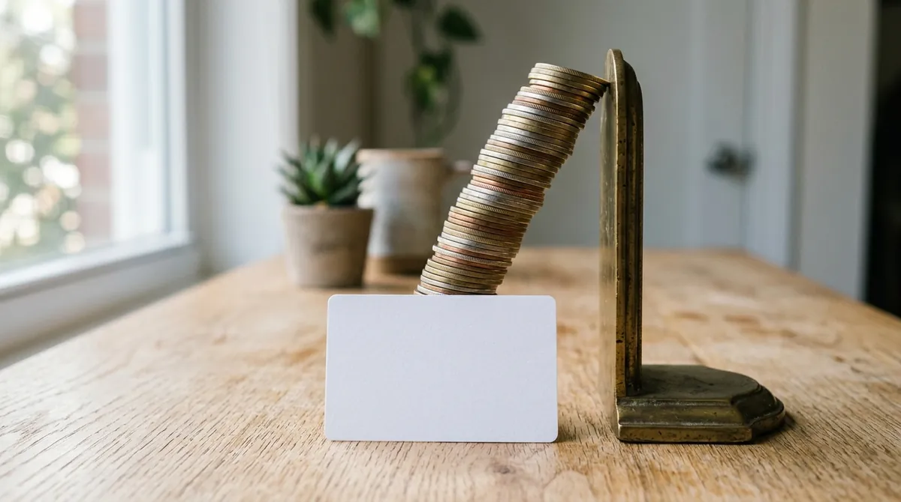
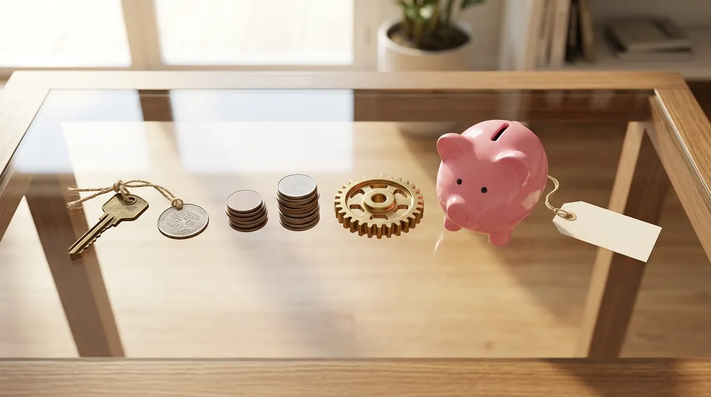

Juros sobre juros
A sobra do mês ganhou um lugar próprio, o cofrinho. Só que, parada, ela fica do mesmo tamanho. Este episódio abre o motor que faz a dívida do cartão crescer sozinha e o dinheiro guardado crescer com o tempo.
O que ele mostra: o que é juro, a conta simples e a composta, por que a taxa ao mês não se multiplica por doze, e o mesmo motor trabalhando contra, na dívida, e a favor, com o tempo. Todo número vem com data e fonte, e toda taxa com a unidade: ao mês ou ao ano.
O aluguel do dinheiro
"vamos tratar os juros como sendo o valor do aluguel do dinheiro no tempo."
Quem usa o dinheiro de outra pessoa ou de um banco paga esse aluguel. Quem deixa o dinheiro com alguém recebe.
"os juros compostos fazem com que o dinheiro cresça exponencialmente ao longo do tempo. Lembre-se de que isso vale para aplicações, mas também para dívidas."
As duas contas
R$ 1.000,00 a 5% ao mês, por seis meses. Nos juros simples, o juro é sempre sobre o valor de partida. Nos compostos, o juro de cada mês entra no saldo e passa a render juro também: o caderno chama de "juros sobre juros".
No fim: R$ 1.300,00
No fim: R$ 1.340,10
No primeiro mês as duas contas são iguais. A diferença nasce no segundo: os R$ 2,50 a mais são o juro sobre o juro do primeiro mês.
Já foi proibido? Uma lei de 1933 proibia "contar juros dos juros". Para banco, a conta composta todo mês é permitida desde 2000, por medida provisória, se estiver no contrato, e em 2024 o Supremo Tribunal Federal confirmou que a regra é constitucional.

As duas curvas
No desenho Futurama (1999), 93 centavos a 2,25% ao ano viram 4,3 bilhões de dólares em mil anos; nos simples, 21 dólares e 86 centavos. A conta ignora que os preços também sobem.
Ao mês não é ao ano
Multiplicar a taxa do mês por doze é conta de juros simples. O juro cobrado é composto.
O terceiro exemplo é do agiota de Glasgow no primeiro episódio de A Ascensão do Dinheiro (2008). É conta de efeito: ninguém carrega a mesma dívida 52 semanas seguidas, e é agiota, não banco.
O motor contra: a dívida
São médias do mercado, não a taxa de um banco. Na conta pura, uma dívida que só crescesse à taxa média do rotativo dobraria em menos de cinco meses.
As travas. Desde abril de 2017, por regra do Conselho Monetário Nacional, o saldo só fica no rotativo até a fatura seguinte. Desde 3 de janeiro de 2024, por uma lei de 2023, juros e encargos do rotativo e do parcelamento da fatura não podem passar do valor original da dívida: quem devia R$ 100 chega no máximo a R$ 200. É teto do total acumulado, não da taxa. E o cheque especial tem teto de 8% ao mês desde 6 de janeiro de 2020; a média de julho de 2026 estava em 7,47% ao mês.

O motor a favor: o tempo pesa mais
As duas a 0,5% ao mês. Chegam perto do mesmo lugar, e Helena tirou do bolso um terço do que Marta tirou. O caderno resume: a chave é o poder dos juros compostos ao longo do tempo.
O cofrinho, parado, fica do mesmo tamanho. O que faz ele crescer é tempo com juro; onde deixar esse dinheiro é a etapa seguinte da série. Para ver: Filhos da Mama, curta de cinco minutos do Banco Central (2015), grátis na internet. É fábula com moral pronta, e esconde que o irmão que guarda fica cinco anos sem carro.
O mesmo motor, dos dois lados
No próximo episódio: o dinheiro pode crescer em número e, mesmo assim, comprar menos, porque o preço das coisas também anda sozinho.
